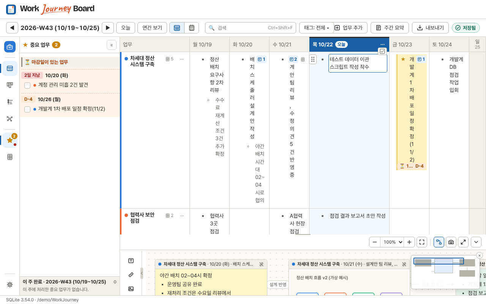
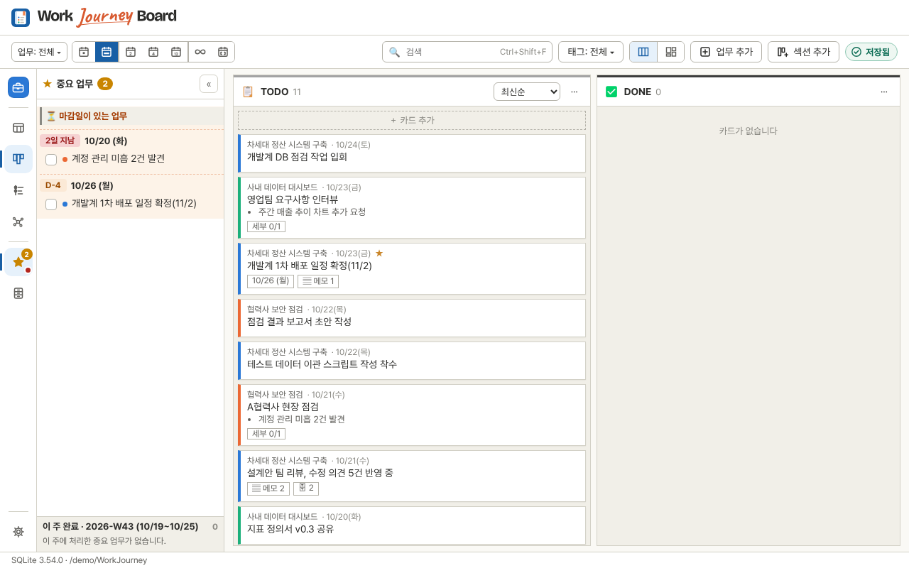

코칭은 늘 가상 예시 일지 화면 위에서 진행합니다(처음 사용자는 일지가 비어 있으므로 — 내 일지는
코칭 동안 닫혀 있다가 끝나면 다시 열림). 투어를 넘겨 볼 수 있습니다. 방식 A·B·C를 바꿔 보고, 키보드
→·Enter(다음), ←(이전), Esc(건너뛰기)도 됩니다. 상세 설계는 docs/coaching-spec.md입니다.

요일 칸에 적기만 하면 요약·경과·엑셀이 만들어집니다.
1분 둘러보기를 시작할까요?
① 첫 실행(업무 이름)을 마치고 주간 보드가 처음 뜬 직후 — 자동 시작 대신 묻는다.
예시 화면으로 주요 기능을 1분 만에 다시 볼 수 있어요.
내 기록은 그대로 둔 채 진행합니다.
①' 이미 쓰던 사용자 — 코칭이 들어간 판으로 업데이트한 뒤 처음 열 때, 아직 끝까지 본 투어가 없으면
딱 1회. 어느 단추를 눌러도 다시 안 띄움(플래그 introShown), 안 본 동안 레일
?에 점.
② [나중에]·[건너뛰기] 뒤 — 레일 ? 단추가 잠시 깜박이고 안내 한 번.

③ 칸반·인사이트·Universe·Cabi.NET을 처음 열 때 — 오른쪽 아래 제안 칩(자동 시작 안 함).
다음에 볼 만한 것
④ T0이 끝나면 — 이어서 볼 투어를 고르거나 닫기.
이미 쓰던 사용자에게 업데이트 뒤 딱 1번 띄우는 카드입니다(처음 사용자 환영 카드도 같은 모양에 문구만 바꿔 씀). 움직임은 짧게 한 번 + 은은한 반복이며, 시스템의 "동작 줄이기" 설정이면 멈춘 그림으로 보입니다.
V1 히어로 그림 — 위쪽 그림에서 실제 코칭처럼 칸 하나가 밝아지고 손가락이 톡톡. 아래에 둘러볼 수 있는 화면 7가지 칩.
V2 카드 부채꼴 — 화면 미리보기 카드 4장이 촤르륵 펼쳐짐. 진행 막대 9칸(직각)으로 "모으는 재미".
여기서 기능 둘러보기를 언제든 열 수 있어요(F1). 예시 화면으로 1분만 둘러볼까요?
V3 스포트라이트 소개 — 카드 대신 코칭 그 자체로: 화면을 가리고 새 ? 단추만 반짝이며 말풍선. 들어가는 곳까지 한 번에 알려 줌.
V4 선물 상자 — 업데이트 "선물" 연출: 상자가 통 튀어 오르고 색종이가 흩어짐. 가장 놀이 같은 안.
| 안 | 느낌 | 장점 | 주의 |
|---|---|---|---|
| V1 히어로 그림 | 밝고 정돈된 앱 소개 | 코칭이 어떤 건지 그림으로 바로 보임, 둘러볼 화면 목록 한눈에 | 정적인 편(손가락·맥박만) |
| V2 카드 부채꼴 | "모으기" 게임 느낌 | 9가지를 다 보고 싶게 만듦, 진행 막대와 코칭 메뉴 상태가 이어짐 | 카드 그림이 작음 |
| V3 스포트라이트 소개 | 코칭 그 자체 | 가장 눈에 띄고, 새 ? 단추 위치까지 한 번에 알려 줌. 실제 화면 위라 "새 기능"이 실감남 | 문구가 짧아야 함 |
| V4 선물 상자 | 축하·선물 연출 | 업데이트를 반기는 느낌, 가장 재미있음 | 업무 앱에서 과하다고 느낄 수 있음 |
추천: 기존 사용자 = V3(어디서 다시 여는지까지 알려 줌, 들어가기 전 짧게 색종이 한 번은 선택) · 처음 사용자 환영 카드 = V1(앱을 처음 본 사람에게 무엇을 할지 그림으로). 조합은 자유롭게 바꿀 수 있습니다.
칸반을 보고 있을 때 연 모습 — "이 화면" 투어가 맨 위. 줄을 누르면 시작(진행 중이면 이어서), ⋯ 처음부터.
| 상태 표시 | 뜻 |
|---|---|
| ✓ 완료 | 끝까지 봄 |
| 4 / 7 | 보다가 멈춤 — 누르면 이어서 |
| 새 단계 2 | 본 뒤 신기능 단계가 더해짐(레일 ?에 점) |
| 40초 | 아직 안 봄 — 걸리는 시간 |
설정 › 정보에도 [기능 둘러보기 열기]·[처음 설치처럼 다시 보기]·[화면별 둘러보기 제안] 스위치.
주간 보드에 적은 항목이 여기 카드로 나타납니다. 카드를 끌어 상태를 바꿔요.
예외(좁은 창 등으로 대상이 화면 밖일 때)에만 작은 그림으로 설명. 평소에는 예시 일지라 대상이 늘 채워져 있다.
| # | 정할 것 | 확정(2026-11-25) |
|---|---|---|
| D1 | 화면 방식 | A 기본 + 직접 눌러 보기 단계만 손가락·클릭 진행 |
| D2 | 첫 실행 노출 | 환영 카드로 묻고 시작, T0 10단계만 |
| D3 | 화면별 투어 | 처음 열 때 제안 칩(자동 시작 안 함) |
| D4 | 다시 보기 입구 | 레일 ?(설정 위) + F1 + 설정 › 정보 |
| D5 | 기존 사용자 | 안 봤으면 업데이트 뒤 1회 새 기능 카드(플래그), 자동 투어 없음 |
| D6 | 건너뛰기 | 확인 없이 바로 끝 + ? 위치 안내 |
| D7 | 빈 일지 | 늘 가상 예시 화면 기준 |
| D8 | 저장 위치 | 이 PC 설정(config.json) |
| D9 | 투어 끝난 뒤 | 시작 전 화면으로 복귀 |
| D10 | 신기능 코칭 기록 | 릴리스 노트 ## 코칭 절 + CI 검사 |
| D11 | 예시 화면 방식 | 메모리 예시 일지로 잠시 전환(읽기 전용·이번 주로 날짜 이동), 끝나면 내 일지 다시 열기 |
| D12 | 1회 알림 대상 | 기존 사용자 중 끝까지 본 투어가 없는 사람, 1회 후 다시 안 띄움 |